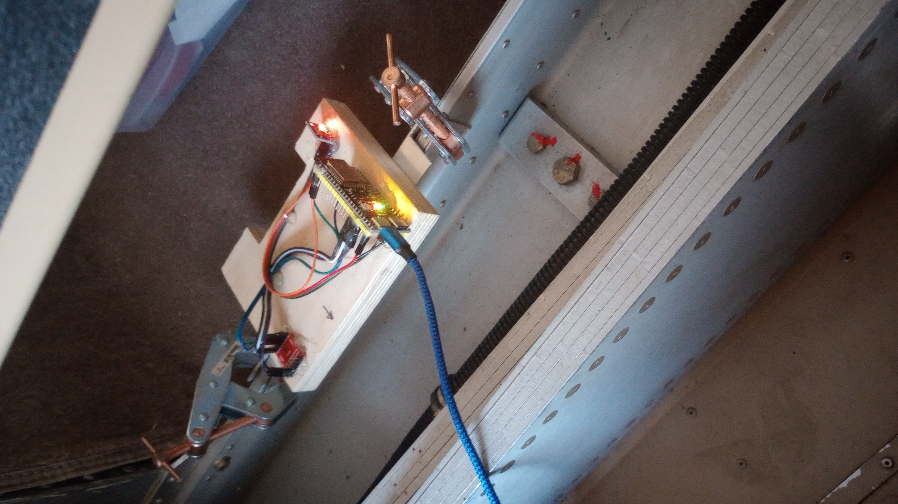

What it is
A minimal, standalone backup attitude instrument designed to keep the pilot upright if the primary system fails. Scope is deliberately narrow: attitude (pitch/roll) + altitude + vertical speed. Current implementation uses a complementary filter (gyro + accelerometer) with on-the-fly accel gating to handle coordinated turns. The system logs all estimator state and sensor raw data for post-flight analysis and comparison against reference avionics.
Progress to Date
Hardware (ESP32-S3 Firmware)
- Complementary filter implemented and validated on bench
- Full sensor suite integrated: BMI270 6-DOF IMU (gyro + accel), MS5611 barometer, KY-040 encoder
- BLE telemetry streaming roll, pitch, altitude, sensor temps, accelerometer and gyro data
- Baseline filter performance captured from 1 flight (4 data runs, ~45 minutes)

Proof-of-concept hardware mounted in the aircraft
Companion App (Android) — Logging and Comparison
- Real-time BLE receiver: captures hardware roll, pitch, altitude, IMU and barometer telemetry
- Reference data logger: reads Dynon avionics stream (heading, airspeed, turn rate, altitude) via UDP
- Navigation input: GPS position and magnetic heading from tablet sensors
- Comparative CSV export: side-by-side hardware vs. reference data, synchronized and timestamped
- Data pipeline: Python analysis scripts for post-flight filter evaluation, accuracy metrics, and sensor characterization
- Enables iterative tuning without bench instrumentation
What the In-Flight Data Showed
One flight (Aug 26, 2026) recorded 4 continuous data runs (~45 minutes total), which I compared afterward against the Dynon reference:
- Roll accuracy: 3.6–9.4° RMS error vs. Dynon reference, depending on maneuver intensity
- Pitch error: 5.87–8.50° RMS
- Shallow-bank regime: Below ~19° bank, gyro/accel combination shows observability limits without additional aiding
- Airspeed aiding: Offline replay showed airspeed-derived bank constraint improves heavy maneuvering roll by ~2°
- Accel gating: Rejection gates properly suppress acceleration noise; accel usage 35–81% depending on maneuver phase
- Recovery behavior: Loss-of-accel recovery timer remains < 1.5 seconds across all profiles
Data logged to CSV for offline analysis; Python scripts extract Euler angles, compute RMS errors vs. reference, and characterize sensor noise floor.
In-Flight Update — September 3, 2026
Second flight with the unit aboard (N712WE RV-12, ~39 minutes, hardware rigidly mounted). This was the first flight of a new estimator: an aided Extended Kalman Filter running live on the ESP32 in shadow mode — logging its own attitude solution alongside the complementary filter for direct comparison, while the complementary filter still drove the bench display. The EKF uses GPS ground-velocity aiding and runs in the configuration I'm aiming for: no magnetometer, no pitot-static.
- Coordinated-turn blind spot closed on hardware: whole-flight roll error dropped to 1.30° RMS vs. Dynon reference, compared to 5.08° for the complementary filter on the same flight. Roll accuracy held flat at 1–2° RMS across every bank angle from wings-level through 50° — the shallow- and mid-bank regime where the old filter was worst (10–12° RMS) is now ~2°.
- Sustained turns: 22 held turns, pooled roll error 1.96° RMS (vs. 8.45° for the complementary filter).
- Pitch: ~0.95° RMS after removing a fixed +4.4° offset, which is a physical mounting-alignment error (a one-time leveling adjustment, not an estimator problem).
- GPS-loss check: a deliberate 65-second cutoff of all reference/GPS data. With no aiding, EKF roll wandered during maneuvering — expected, since GPS velocity is what gives the filter its turn observability in this sensor configuration. It re-anchored cleanly within seconds once GPS returned, with no lasting error. This matches how certified GPS-aided backup instruments behave (warn, then blank the horizon); wiring up that “attitude degraded” annunciation is the next task.
- Data capture: cleanest yet — 33 Hz backup telemetry, zero dropouts over the full flight.
Incidental findings: ground-taxi turns independently confirmed the EKF's accelerometer-gating logic; the slip/skid indication reads about 0.7× of reference (flagged for a firmware fix); and cabin-pressure altitude runs 50–85 ft high at cruise speed — a known tradeoff of having no static port on a minimal backup instrument.
Current Phase
The aided EKF is now the development path forward. Hardware and app both operational and data-producing; the EKF runs live on the hardware in shadow mode while the complementary filter still drives the display. Current focus: the work needed before the EKF can take over the pilot-facing output — filter-consistency monitoring and an “attitude degraded” annunciation for GPS-loss and other low-confidence conditions.
Next Steps
- Add filter-consistency (NIS/NEES) monitoring so the estimator can self-assess its solution in flight
- Implement the “attitude degraded” annunciation and horizon-blanking for GPS-loss / low-confidence states
- Static-level the hardware to remove the +4.4° pitch mounting offset
- Cut the EKF over to the pilot-facing output once tracking and consistency both clear the bar; keep the complementary filter as a cross-check
- Firmware pass on the slip/skid indication gain and the Y-axis accelerometer offset
- Display integration: RGB attitude display and vertical-speed tape (Phase 3)
- Keep comparing against the primary avionics as I fly, across different airspeeds, load factors, and atmospheric conditions
Documentation